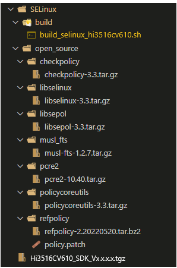
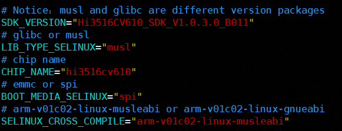
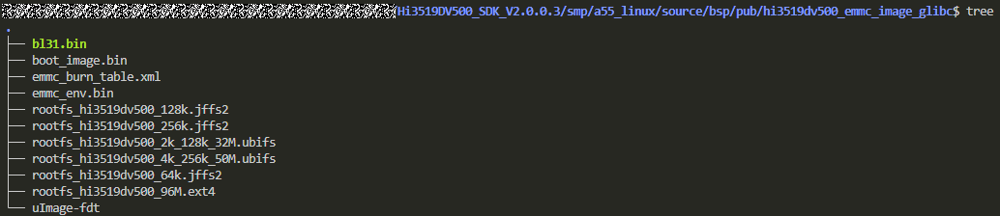
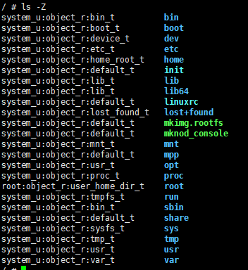
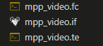

SELinux 开发指南
前言
本文档主要介绍如何在产品版本上集成SELinux，及SELinux相关功能开发。
须知：
本文档以Hi3519DV500为例，未有特殊说明，其余产品版本与Hi3519DV500内容完全一致。
与本文档相对应的产品版本如下。
本文档（本指南）主要适用于以下工程师：
- 技术支持工程师
- 软件开发工程师
修订记录累积了每次文档更新的说明。最新版本的文档包含以前所有文档版本的更新内容。
SELinux介绍
SELinux介绍
SELinux（Security-Enhanced Linux）是一种安全增强的Linux操作系统，旨在提供更高级别的安全保护。
- SELinux通过强制访问控制（MAC，Mandatory Access Control）机制来限制进程的访问权限，从而提高系统的安全性。
- 与传统的Linux访问控制（DAC, Discretionary Access Control）机制不同，SELinux使用了一种基于策略的访问控制模型，它将每个进程和文件都分配了一个安全上下文（Security Context），并根据预定义的策略来限制进程和文件之间的交互。这种策略是由系统管理员定义的，可以根据实际需求进行修改和调整。
更多SELinux的信息参考：http://selinuxproject.org/page/Main_Page
SELinux依赖介绍
pcre2
pcre2（Perl Compatible Regular Expressions 2）是一个正则表达式库，它提供了一种强大的方式来处理文本匹配和替换。PCRE2支持UTF-8、UTF-16和UTF-32编码，并提供了许多高级功能，如反向引用、零宽度断言、递归模式等。此处主要用来处理策略规则。
libsepol
libsepol是一个用于SELinux策略管理的库，它提供了一组API，用于读取、解析和操作SELinux策略。它是SELinux策略管理工具中的一个重要组成部分，可以帮助用户管理和维护SELinux策略。其主要作用包括：
- 解析和加载SELinux策略文件：libsepol可以读取和解析SELinux策略文件，将其转换为内存中的数据结构，以便后续的操作。
- 操作SELinux策略：libsepol提供了一组API，可以用于操作SELinux策略，例如添加、删除和修改SELinux策略规则等。
- 验证SELinux策略：libsepol可以验证SELinux策略的正确性，以确保其符合SELinux的安全要求。
- 支持多种策略格式：libsepol支持多种SELinux策略格式，包括二进制格式和文本格式，可以方便地进行转换和管理。
libselinux
libselinux是一个用于实现SELinux安全策略的库文件。SELinux是一种强制访问控制（MAC）机制，它可以限制进程对系统资源的访问，从而提高系统的安全性。libselinux提供了一组API，可以让开发者在应用程序中使用SELinux策略。其主要作用包括：
- 实现SELinux安全策略：libselinux提供了一组API，可以让开发者在应用程序中使用SELinux策略。这些API包括获取和设置进程的安全上下文、检查文件或进程的安全上下文等。
- 提高系统安全性：SELinux可以限制进程对系统资源的访问，从而提高系统的安全性。通过使用libselinux，开发者可以在应用程序中使用SELinux策略，从而进一步提高系统的安全性。
- 支持多种安全策略：libselinux支持多种安全策略，包括MLS（Multi-Level Security）、MCS（Multi-Category Security）和RBAC（Role-Based Access Control）等。这些安全策略可以根据不同的应用场景进行选择和配置。
checkpolicy
checkpolicy是SELinux中的一个工具，用于检查SELinux策略文件的语法和语义错误。它可以帮助用户在安装或修改SELinux策略时发现错误，从而提高系统的安全性和稳定性。其主要有以下几个方面：检查策略文件的语法错误，检查策略文件的语义错误，生成策略文件。此处其作用是作为编译refpolicy的依赖工具。
policycoreutils
policycoreutils是一个用于管理SELinux策略的工具集。它包含了一系列的命令行工具，可以用于创建、修改、删除和查询SELinux策略。此处其作用是作为编译refpolicy的依赖工具。
refpolicy
refpolicy是一个基于SELinux的安全策略，用于控制进程和用户在系统中的访问权限。它定义了一系列规则和限制，以确保系统资源只能被授权的进程和用户访问，从而提高系统的安全性。其作用包括：
- 控制进程和用户的访问权限：refpolicy定义了一系列规则和限制，以确保只有授权的进程和用户才能访问系统资源。
- 防止未授权的访问：refpolicy可以防止未授权的进程和用户访问系统资源，从而提高系统的安全性。
- 简化安全管理：refpolicy提供了一种简单的方法来管理系统的安全性，可以减少管理员的工作量。
- 支持定制化：refpolicy可以根据不同的需求进行定制化，以满足不同系统的安全需求。
musl_fts
编译musl版本SELinux的依赖库（编译glibc版本的SELinux是不需要该开源软件的）。musl-fts是一个用于文件树遍历的库，它提供了一组函数，可以在文件系统中遍历目录树，并对每个文件或目录执行指定的操作。musl-fts库的主要作用是提供一种方便的方式来遍历文件系统中的目录树，以便于实现文件操作、备份、搜索等功能。它可以递归地遍历目录树，同时提供了一些过滤器，可以根据文件类型、名称、大小等条件来过滤文件。
SELinux编译使用说明
SELinux编译指导
注意：
在编译 SELinux 前请参考 《Hi35xxVxxx 开发环境用户指南》 搭建基础 编译环境。
本文档以Hi3519DV500芯片为例。
SELinux依赖源码下载
-
下载pcre2-10.40.tar.gz
链接：https://github.com/PCRE2Project/pcre2/releases/tag/pcre2-10.40
-
下载libsepol-3.3.tar.gz
链接：https://github.com/SELinuxProject/selinux/releases/tag/3.3
-
下载libselinux-3.3.tar.gz
链接：https://github.com/SELinuxProject/selinux/releases/tag/3.3
-
下载checkpolicy-3.3.tar.gz
链接：https://github.com/SELinuxProject/selinux/releases/tag/3.3
-
下载policycoreutils-3.3.tar.gz
链接：https://github.com/SELinuxProject/selinux/releases/tag/3.3
-
下载refpolicy-2.20220520.tar.bz2
链接：https://github.com/SELinuxProject/refpolicy/releases/tag/RELEASE_2_20220520
-
下载musl-fts-1.2.7.tar.gz
链接：https://github.com/void-linux/musl-fts/releases/tag/v1.2.7
SDK下载
SDK版本包下载，参考版本包名，如：Hi35xxx_SDK_Vx.x.x.tgz
编译环境准备
-
新建一个空目录，将从版本包下载的“SDK压缩包（Hi35xxx_SDK_Vx.x.x.tgz）和SELinux目录”放于该空目录下：
-
将SELinux依赖源码下载章节下载的SELinux相关源码，放入步骤1所示的SELinux目录下。

源码编译
进入编译环境准备中2的SELinux/build/目录：修改脚本build_selinux_hi3516cv610.sh中，下图所示的五个参数为当前环境对应值：

此外，release版本需要将环境变量编译进uboot，即修改bsp/tools/pc/uboot_env/env_text/hi3516cv610/nand_env.txt文件内容为：
在bootargs末尾添加上security=selinux selinux=1
若使用release版本的SPI NOR介质，需要将BOOT_MEDIA_SELINUX="spi_nand"修改为BOOT_MEDIA_SELINUX="spi"。
说明：
SELinux默认是在release版本上支持的。
此处以Hi3519DV500为例，执行的脚本名为：build_selinux_hi3519dv500.sh；其余芯片版本需将脚本名上的芯片名替换为对应芯片名字，如Hi3516CV610执行的脚本名为：build_selinux_hi3516cv610.sh。
参考以下步骤进行编译。
-
整体编译：
./build_selinux_hi3519dv500.sh all
执行完整体编译后会在SDK版本包的Hi35xxx_SDK_Vx.x.x /smp/a55_linux/source/bsp/pub/hi35xxx_xxx_image_xxx下生成包含SELinux功能的镜像文件：
例如：

-
部分编译：
-
单编策略：./build_selinux_hi3519dv500.sh policy
执行完单编策略后，会在SELinux/open_source/refpolicy/out下生成策略二进制文件，将out下的内容拷贝到单板linux的文件系统中对应目录下，然后重启单板，即可完成策略的更新；
-
单编文件系统：./build_selinux_hi3519dv500.sh fs
执行完单编文件系统后，会更新SDK版本包的Hi35xxx_SDK_Vx.x.x /smp/a55_linux/source/bsp/pub/hi35xxx_xxx_image_xxx目录下，文件系统对应的二进制文件；
-
-
清理：
- 清理文件：./build_selinux_hi3519dv500.sh clean
- 深度清理文件：./build_selinux_hi3519dv500.sh distclean
-
查看帮助：
./build_selinux_hi3519dv500.sh -h
说明：
1. musl和glibc是两个不同的版本包
2. 整体编译会重编所有SDK相关驱动的ko文件
3. 每次编译前建议先执行：./build_selinux_hi3519dv500.sh clean
SELinux使用说明
烧写镜像
将源码编译中1生成的镜像文件，烧写到单板上，烧写镜像：参考SDK版本包镜像烧写方式。
uboot启动参数设置
-
烧写完后，重启单板，进入uboot命令行，设置uboot启动参数：
注：xxx代表uboot的bootargs的原始参数，release版本不需要设置该参数。
-
重启单板，进入的即为包含SELinux功能的Linux系统，执行命令：
预期正常结果为：

SELinux常用命令
-
SELinux模式介绍：
- enforcing: 强制模式，违反SELinux规则的行为将被阻止并记录到日志中。
- permissive: 宽容模式，当违反SELinux的行为规则时，会发出警告并记录到日志中，但是不会被阻止，一般都是调试用。
- disabled: 关闭SELinux，不使用SELinux。
-
SELinux命令介绍：
-
使能SELinux强制模式：
- 临时使能（主要用于调试，重启后失效），需执行命令：setenforce 1
- 永久使能：更改单板/etc/selinux/config中的SELINUX变量为：SELINUX=enforcing
-
使能SELinux宽容模式：
- 临时使能（主要用于调试，重启后失效），需执行命令：setenforce 0
- 永久使能：更改单板/etc/selinux/config中的SELINUX变量为：SELINUX=permissive
-
关闭SELinux：
更改单板/etc/selinux/config中的SELINUX变量为：SELINUX=disabled
-
从策略二进制中，更新/mpp下的文件的上下文：restorecon -R /mpp/
- 查看当前目录文件的安全上下文：ls -Z
-
通过该指南构建出来的含有SELinux功能的镜像，烧写到单板后，系统默认处于permissive状态，宽容模式，即单板系统中的/etc/selinux/config中的SELINUX变量为：SELINUX=permissive。
权限访问控制sample样例
样例目标
该权限访问控制sample以sample_vio为例，具体为了实现：sample_vio的进程在配置了访问控制策略后能正常访问mpp video相关的设备节点，进而其能正常运行，而其它进程因未配置相关允许访问策略，则无法访问mpp video相关的设备节点，因此其它任何进程都无法影响sample_vio的正常运行，从而增加业务进程稳定性。
sample_vio编译及运行
Hi3519DV500/Hi3516DV500的sample名为：sample_vio；Hi3516CV610名为：sample_vie，操作方法与Hi3519DV500/Hi3516DV500一致。
sample_vio编译
参考SDK的sample编译方式，此处用到的是：sample_vio。
sample_vio运行
- 当前环境参考：sdk版本包内：“Hi35xxVxxx 开发环境用户指南.pdf”，单板启动进入linux后，mount ko所在服务器到单板share目录，然后插入重编后的ko（参考SDK的ko插入方式）;
-
将sample_vio拷贝到单板的“/mpp/”目录下;
-
步骤1、步骤2完成后，在单板linux下，执行以下命令：
restorecon -R /dev/ （更新/dev/目录下设备节点的上下文）
restorecon -R /mpp/ （更新mpp/目录下的文件的上下文）
cd /mpp
chmod +x sample_vio
setenforce 1 （使能SELinux强制模式）
-
执行sample_vio（参考SDK的sample_vio的执行方式）。
sample_vio访问控制策略实现说明
策略基本介绍
sample_vio访问控制策略主要提供了一系列针对mpp video相关设备节点访问的SELinux策略规则，进而让sample_vio的进程能在打开了SELinux的Linux系统中具有访问mpp video相关设备节点的权限，进而能正常运行，而其它进程则限制了其访问mpp video相关设备节点的权限，进而无法影响sample_vio的正常运行。
策略文件组成
SELinux一个策略源模块一般由三个文件组成，下图为sample的策略文件组成:

- 标记策略文件(.fc)：这个文件包括与这个模块有关的文件上下文标记语句；
- 外部接口文件(.if)：这个文件包括模块接口，这些接口是其它模块访问这个模块的类型和属性，一般不使用；
- 私有策略文件(.te)：这个文件包括了模块专用的声明和规则，通常，所有模块类型和属性声明都包括在.te文件中，以及授予这些类型和属性核心访问权的规则（allow语句）；
策略访问控制实现
SELinux的访问控制主要是基于类型（type）进行的，对于linux中的每个对象，都设定有一个类型，因此便可通过一系列权限控制语句对进程、文件、设备节点等进行访问控制。
策略语句样例：
即：允许拥有mpp_video_process_t类型的对象，对拥有mpp_video_t类型的对象，具有ioctl、map、open、read、write操作的权限。
sample_vio策略访问控制的核心实现逻辑如图1所示。

此外，其详细实现步骤为：
-
类型定义：在mpp_video.te文件中定义类型
type mpp_video_process_t; # mpp下所有video相关进程都为该类型
type mpp_video_exec_t; # mpp下所有video相关可执行程序都为该类型
type mpp_video_t; # mpp下所有video相关设备节点都为该类型
type mpp_others_t; # mpp下所有非video相关设备节点都为该类型
-
mpp相关对象上下文定义：在mpp_video.fc文件中定义mpp设备节点和sample_vio的上下文： 即将sample_vio设为mpp_video_exec_t,将/dev目录下的video相关节点设为：mpp_vedio_t,将/dev目录下mpp相关的非video相关节点设为：mpp_others_t；
-
mpp全局访问控制：在mpp_video.te文件中定义全局访问控制，不允许非mpp_video_process_t类型的对象对"mpp_video_t"的chr_file文件进行任何操作：
-
角色关联：在mpp_video.te文件中定义角色关联语句，将用户角色sysadm_r与mpp_video_process_t、mpp_video_exec_t、mpp_others_t、mpp_video_t类型关联，进而能让上述类型在访问控制中能生成有效的上下文；
- mpp video相关进程类型转换：在mpp_video.te文件中定义进程类型转换语句，让user能通过运行mpp_video_exec_t类型的可执行程序进而将该进程转换成mpp_video_process_t类型；
-
基础策略确定后，通过"源码编译"的单编策略步骤，将生成的策略文件拷贝到单板文件系统中，然后设定SELinux为permissive模式（即让单板中的/etc/selinux/config中的SELINUX变量设置为permissive，即SELINUX=permissive），然后运行sample_vio，查看当前控制台输出的权限拒绝提示：
例如：audit: type=1400 audit(8430820.660:3): avc: denied { map } for pid=1592 comm="sample_vo" path="/dev/mmz_userdev" dev="devtmpfs" ino=318 scontext=root:sysadm_r:sysadm_t tcontext=system_u:object_r:device_t tclass=chr_file permissive=1
分析拒绝原因为：sysadm_t想要对device_t类型的对象进行map操作被拒绝:
- 源类型：sysadm_t
- 目标类型：device_t
- 目标对象：chr_file
- 拒绝访问操作：map
因此，编写策略：allow sysadm_t device_t:chr_file { map }，即可解决该权限拒绝问题，重复步骤5和6，直到在SELinux的permissive模式下，不出现mpp相关类型的权限拒绝信息；
-
将SELinux设为强制模式：参考“ 2.2.3 SELinux常用命令” ，然后运行sample_vio，即可实现，非mpp_video_process_t类型的进程无法访问mpp video设备相关节点，进而无法干扰sample_vio正常运行的目的。
注意事项
SELinux注意事项
- 编译SELinux相关依赖时，需要保证编译环境能编过SDK版本包；
- 本指导文档提供的SELinux的权限控制sample，仅供参考使用，完整的策略规则，需要用户自行去完善；
-
要使SELinux的访问控制功能生效，需用户编写策略集，该版本不交付商用策略，SELinux策略参考：refpolicy